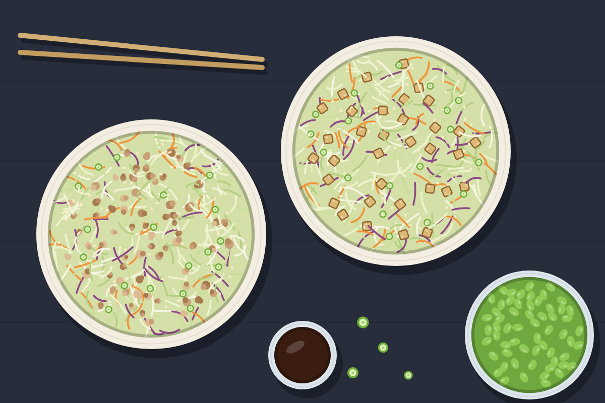

Egg Roll in a Bowl (Turkey and Tempeh)
Cabbage, ginger, and sesame in two skillets: ground turkey or pork in one, crumbled tempeh in the other. Dairy-free, with edamame on the side.

Serves 4 servings
Prep
Cook
Total
Ingredients
Sauce, for both skillets
- 3 tbsp soy sauce or tamari
- 1 tbsp rice vinegar
- 1 tbsp toasted sesame oil
- 1 tsp sriracha (optional)
Shared
- 2 bags (14 oz each) coleslaw mix
- 4 cloves garlic, minced
- 2 tbsp grated ginger
- 6 green onions, sliced, whites and greens separated
- sesame seeds
Meat skillet
- 1 lb ground turkey or pork
Vegetarian skillet
- 8 oz tempeh, crumbled
- 1 tbsp oil
Side
- 2 cups frozen shelled edamame
Steps
- Whisk the sauce together.
- Brown the meat in one skillet for 6 to 8 minutes, breaking it up. In the other, cook the tempeh in oil for 5 to 6 minutes until golden.
- Split the garlic, ginger, and green onion whites between the skillets and stir for 1 minute.
- Add one bag of coleslaw mix and half the sauce to each skillet. Cook 4 to 5 minutes, until the cabbage is crisp-tender.
- Microwave or boil the edamame for 3 to 4 minutes and salt it.
- Top with green onion tops and sesame seeds.
Tempeh takes the sauce better if it browns well first. Crumbled extra-firm tofu works in its place.